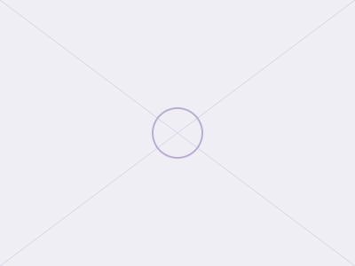

Sustainable Childrens Aircraft Seat
Reimagining child-focused aircraft seating for sustainability and comfort

Overview
[Placeholder — a short summary of the project: what it is, the context it was made in (module, brief, timeframe, team or solo), and why it mattered.]
Problem
[Placeholder — the brief or problem you were given, or the problem you identified yourself. What need or gap was this addressing?]
Process
[Placeholder — research and discovery: user needs, constraints, existing solutions, early concepts.]
[Placeholder — making and building: sketches, prototypes, CAD iterations, physical builds, testing, and what you learned from each round of making. Include images of models, rigs, or test setups here.]
Outcome
[Placeholder — the final result: what was delivered, how it performed against the brief, and any feedback or evaluation received.]
My Role
[Placeholder — what you specifically did, especially if this was a team project. Be concrete about your contributions.]
Tools Used
- [Tool 1]
- [Tool 2]
- [Tool 3]